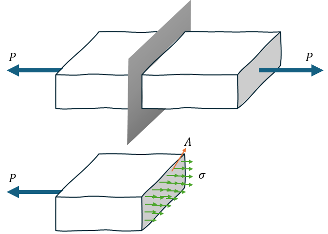

Apunte Interactivo de Mecánica de Materiales
Introducción a la Mecánica de Materiales
La Mecánica de Materiales es una rama de la ingeniería que proporciona los principios fundamentales para el diseño y análisis estructural.
El objetivo principal de su estudio es comprender la relación entre las fuerzas exteriores aplicadas (cargas) y las fuerzas interiores o tensiones generadas en el material, así como las deformaciones resultantes.
Esta base teórica se aplica al diseño de todo tipo de estructuras e ingenierías: máquinas, aviones, edificios y puentes.
La disciplina también es conocida como Resistencia de Materiales, y se diferencia de la Mecánica Teórica en que considera las propiedades reales de los cuerpos deformables, no ideales o rígidos.
Tensión Normal (σ) y Deformación
Esta sección define los dos conceptos básicos que describen el comportamiento interno (tensión) y externo (deformación) del material.
Concepto de Tensión (σ)
La tensión (σ) representa la intensidad de las fuerzas internas en un cuerpo generadas por la aplicación de cargas externas.
Para analizarla, se realiza un corte imaginario (sección transversal) en el cuerpo y se traza un diagrama de cuerpo libre (DCL), donde se visualizan las fuerzas internas que equilibran la carga aplicada. Como se ve en la figura Figura 1

En una barra prismática cargada axialmente, la tensión normal se calcula como:
\[ \sigma = \frac{P}{A} \]
donde:
- \(P\): fuerza axial aplicada
- \(A\): área de la sección transversal
Por convención:
- Tensión de tracción → positiva (el elemento se alarga)
- Tensión de compresión → negativa (el elemento se acorta)
Si la carga se aplica a través del centroide (Baricentro) de la sección, se asume una distribución uniforme de la tensión.
Concepto de Deformación (δ) y Deformación Unitaria (ϵ)
Cuando se aplica una carga axial, la barra se alarga o acorta. El cambio total de longitud se denomina deformación (\(\delta\)).
La deformación unitaria (\(\epsilon\)), es una cantidad adimensional que mide la variación relativa de longitud:
\[ \epsilon = \frac{\delta}{L} \]
donde:
- \(\delta = L_f - L_i\): alargamiento o acortamiento total
- \(L_i\): longitud original
Por convencion se expresa en % o en ‰, aunque tambien se expresa en unidades como mm/mm o m/m, aunque físicamente no tiene dimensiones.
Diagramas Tensión–Deformación
Las propiedades mecánicas de los materiales se determinan experimentalmente, usualmente mediante el ensayo de tracción.
El resultado se representa en el diagrama tensión–deformación unitaria, que describe el comportamiento del material bajo carga.
Para un acero estructural típico, se observan las siguientes regiones y puntos característicos:
Límite de proporcionalidad (P):
Región inicial donde tensión y deformación son proporcionales (ley lineal).Elasticidad lineal y Ley de Hooke:
En este tramo, el material recupera su forma original al descargarlo.
Se cumple: [ = E , ] donde ( E ) es el Módulo de Elasticidad (o de Young), que mide la rigidez del material.Punto de fluencia (Y):
Momento en que el material comienza a ceder sin aumento apreciable de carga.
Marca el límite práctico de trabajo en diseño estructural.Plasticidad:
El material soporta deformaciones permanentes sin recuperar su forma original al descargarlo.Tensión última (U):
Máxima carga que el material puede resistir antes de comenzar la fractura.Fractura (F):
Pérdida total de resistencia; el material se rompe.Ductilidad y fragilidad:
Los materiales dúctiles presentan gran deformación antes de romper, mientras que los frágiles fallan con poca deformación.
Tensión Cortante (τ) y Deformación Angular (γ)
Además de la tensión normal (perpendicular a la sección), existen las tensiones cortantes (τ), que actúan paralelas o tangenciales a la superficie del material.
Cálculo del esfuerzo cortante medio
[ _ = ]
donde: - ( V ): fuerza cortante total
- ( A ): área donde actúa
Deformación angular (γ)
El esfuerzo cortante provoca una distorsión angular (γ), o cambio de forma del elemento.
Ley de Hooke para el cortante
En el rango elástico se cumple:
[ = G , ]
donde ( G ) es el Módulo de Elasticidad al Cortante o Módulo de Rigidez, relacionado con ( E ) y la relación de Poisson (ν) por:
[ G = ]
Deformaciones Laterales y Relación de Poisson (ν)
Cuando una barra es cargada axialmente, además del alargamiento o acortamiento longitudinal, se producen deformaciones laterales:
un material traccionado se estrecha, y uno comprimido se ensancha.
La Relación de Poisson (ν) se define como:
[ = - ]
El signo negativo refleja que las deformaciones tienen sentidos opuestos:
si la axial es positiva (tracción), la lateral es negativa (contracción).
Tensiones Permisibles, Cargas y Factor de Seguridad
El diseño estructural busca garantizar que los elementos resistan las cargas sin alcanzar la falla o deformaciones excesivas.
Conceptos básicos
Falla:
Puede significar rotura, colapso o deformaciones inaceptables.Factor de seguridad (n):
Margen utilizado para proteger contra la falla: [ n = ]**Tensión permisible (({perm})):**
Valor máximo admisible en servicio: [ {perm} = ] donde ( _Y ) es la tensión de fluencia.Cargas de servicio:
Son las cargas reales de operación, que deben mantenerse dentro del rango elástico del material.
Conclusión del Capítulo
Este capítulo sienta las bases teóricas y conceptuales de la Mecánica de Materiales, introduciendo los vínculos entre: - Cargas aplicadas
- Tensiones internas
- Deformaciones resultantes